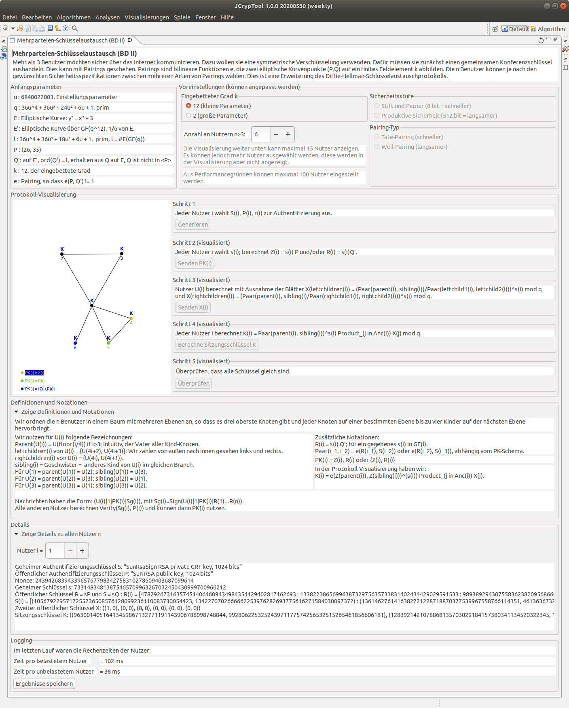

Multi-Party- oder Mehrparteien-Schlüsselvereinbarung (englischer Name multi-party key exchange MPKE) sind Methoden zum Austausch von Informationen über unsichere/öffentliche Kanäle, um sich auf einen sicheren, gemeinsamen kryptografischen Schlüssel zwischen mehr als 2 Parteien zu einigen.
Diese Hilfe beschreibt zwei Themen:
1) Mehrparteien-Schlüsselaustausch-Algorithmen
2) Handhabung in JCT: Wie man diese Visualisierung benutzt
Multi-Party- oder Mehrparteien-Schlüsselvereinbarung (englischer Name multi-party key agreement MPKA) [andere in der Literatur verwendete Namen sind Gruppenschlüsselaustausch-Protokoll (GKE) oder Konferenzschlüssel-Einrichtungs-Protokoll] sind Methoden zum Austausch von Informationen über unsichere/öffentliche Kanäle, um sich auf einen sicheren, gemeinsamen kryptografischen Schlüssel (manchmal auch Session-Key genannt) zwischen mehr als 2 Parteien zu einigen. Das erste Schema dieser Art war der Diffie-Hellman-Schlüsselaustausch (DH), der dieses Protokoll für 2 Parteien beschrieb.
Multi-Party-Schlüsselvereinbarungs-Protokolle sind Teil des Forschungsgebiets der sicheren Mehrparteien-Berechnung (MPC) und diese Protokolle sind z.B. für Video-Broadcasting, Video-Konferenzen (bspw. in Riot or Jitsi), Mobiltelefone oder 3G, 4G oder 5G relevant.
Hier betrachten wir nur solche Multi-Party-Schlüsselvereinbarungs-Protokolle, die keine vertrauenswürdige dritte Instanz (trusted third party) erfordern. Der ursprüngliche Diffie-Hellman-Schlüsselaustausch (DHKE) wurde ursprünglich nur in endlichen Körpern primzahliger Ordnung umgesetzt. Es können jedoch auch andere kryptografische "Settings" verwendet werden, nämlich elliptische Kurven und Paarungen (pairings) auf elliptischen Kurven.
Diese Visualisierung zeigt für eine beliebige Anzahl von Benutzern das BD II-Schlüsselaustauschprotokoll (benannt nach seinen Erfindern Burmester und Desmedt), dargestellt in den Paarungen von Weil und Tate für einen embedded Grad k=2 und in den Paarungen für einen embedded Grad k=12. Weitere Einzelheiten finden sich in [Onete 2008].
Der Broadcast-Algorithmus BD II in der Paarungseinstellung verwendet die elliptische Kurve E, die standardmäßig so eingestellt ist, dass sie die kurze Weierstraß-Gleichung y^2 = x^3 + 3 nutzt. Die entsprechende Anordnung der Benutzer wird in der Gruppierung Protokoll-Visualisierung angezeigt: Bei einem Ausgangsdreieck von 3 Benutzern haben alle Benutzer dann bis zu 4 Kinder, genau 1 Elternteil und 0 oder 1 Geschwister. Wenn Sie den Spinner für die Anzahl der Benutzer hochzählen und dabei die Protokoll-Visualisierung beobachten, können Sie sehen, wie neue Benutzer im Graphen eingeordnet werden.

Nach dem Start der MPKE-Visualisierung können Sie die Parameter der Voreinstellung für die MPKE-Operationen setzen:
Für den Embedding-Grad k=2 haben Sie weitere Optionen:
Die Standardparameter (die Sie auch nach einem Klick auf das Neustart-Icon erhalten) sind: n=4, k=12
Auf der linken Seite sehen Sie dann die wirklichen Anfangsparameter, die das Programm gemäß Ihren Voreinstellungen verwendet. Derzeit können diese Anfangsparameter nicht manuell geändert werden, sondern nur indirekt durch Auswahl der Voreinstellungen.
Im Standardfall (k=12) sind diese Anfangsparameter die öffentlichen Parameter: q, l, E, E', P auf E und Q' auf E'.
Innerhalb der Gruppierung Protokoll-Visualisierung muss jeder Benutzer U_i mit i=1, ..., n vier Schritte durchführen:
Schritt 5 dient nur zur Überprüfung, ob alle Konferenzschlüssel gleich sind (dieser Schritt ist nur in der Demonstration, er wird in der Realität nicht benötigt).
Unterhalb der Gruppierung Protokoll-Visualisierung befindet sich eine Gruppierung mit den verwendeten Definitionen und Formeln. Diese Gruppierung kann auseinander und zusammen gefaltet werden.
Darunter befindet sich die Gruppierung Details, in der Sie die berechneten Werte für jeden Benutzer sehen können. Diese Gruppierung kann ebenfalls auseinander und zusammen gefaltet werden.
Unten ist die Gruppierung Protokollierung: Sie zeigt die benötigte Zeit an und enthält den Knopf Ergebnisse speichern. Ein Klick auf den Knopf erzeugt eine Datei mit dem Standardnamen JCT_BDII_Log.txt mit allen Werten (Voreinstellungen, Anfangsparameter, generierte und berechnete Werte aller Schritte). Vor dem Abspeichern müssen Sie JCT mitteilen, wohin diese Datei gespeichert werden soll.
Weitere Informationen über das BD II-Schlüsselaustauschprotokoll finden Sie unter: